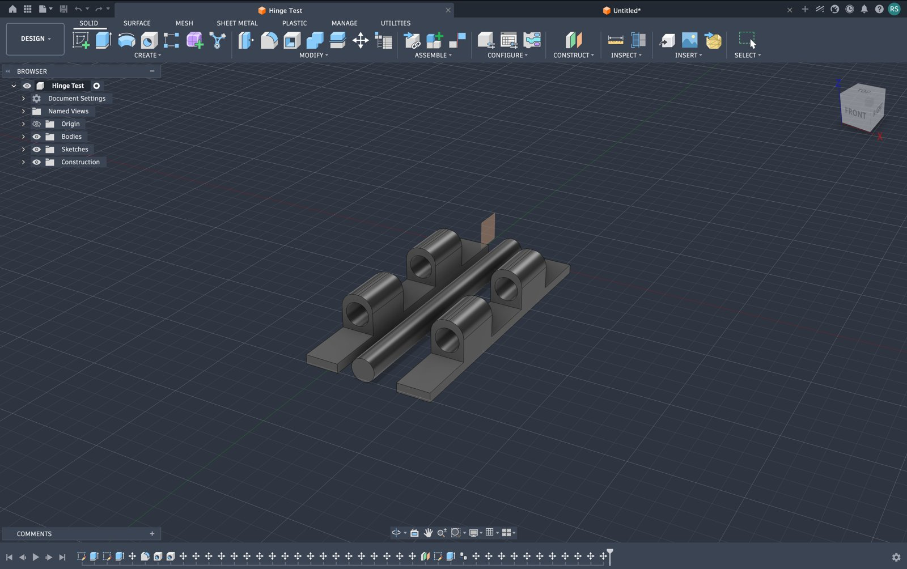
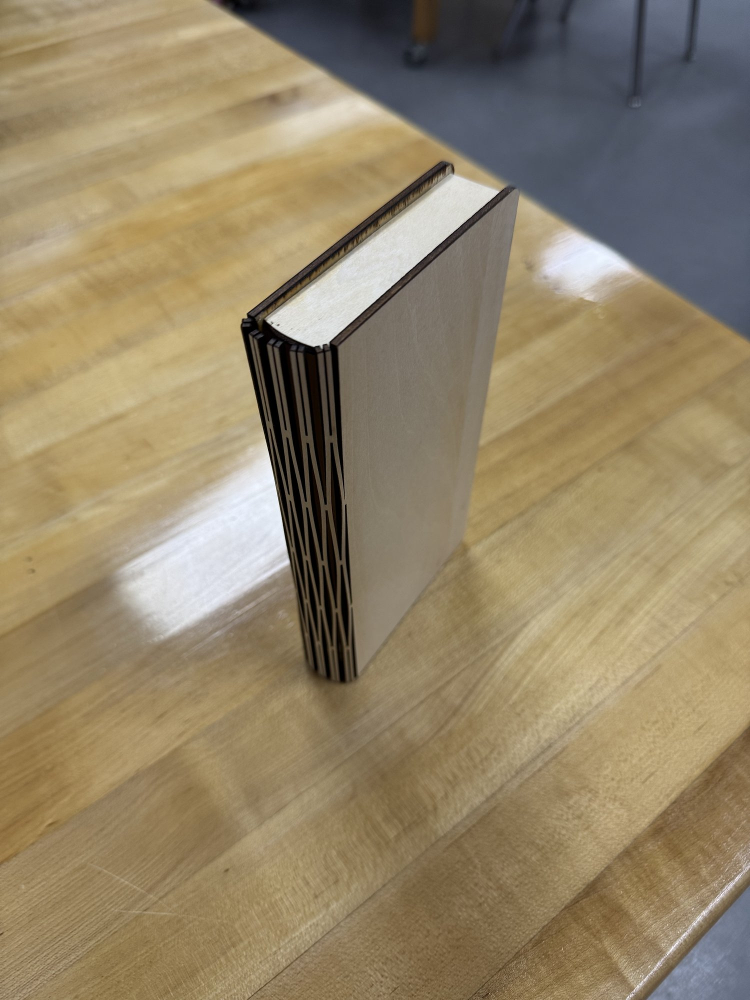
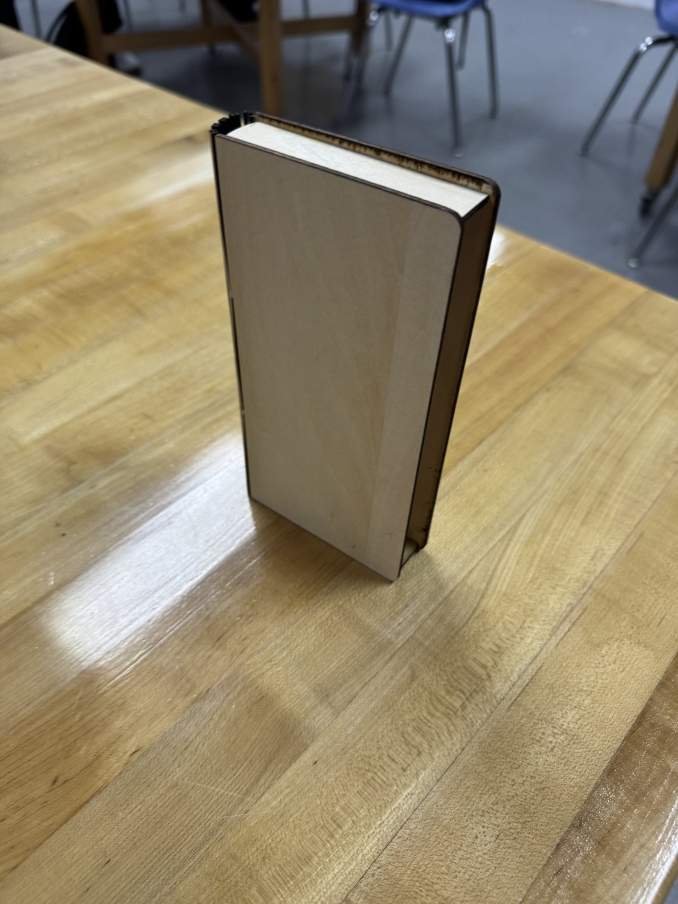

Where the idea came from
I love chess. I saw a TikTok where people made board games that fold up into books so they look nice on a shelf. I couldn't make something as advanced as theirs, so I simplified it into my own version.
A chess board that folds and looks like a hardcover book on a shelf. This is my final project for Design Technology. Everything below is real progress so far, not a finished write-up, so some parts still say TBD.
I love chess. I saw a TikTok where people made board games that fold up into books so they look nice on a shelf. I couldn't make something as advanced as theirs, so I simplified it into my own version.
A functional chess board that folds into a book shape, able to sit on a bookshelf when closed. The current design (redesigned on 2026-09-25): the cover is a static book-shaped case, and the chess board itself folds in half and slides into the case, like a book going into a slipcase.
Chess players and aesthetic lovers who want a board that doubles as a display piece.
Laser cut plywood for the cover case. Hinge material still open (magnets, or a real hinge). 3D printing for the folding board and the hinge mechanism.
Before building anything, I worked out how a book hinge actually needs to sit so the two sides close flat with no gap, and how that drives the size of the board.
Since the redesign moved the hinge onto the folding board itself, this needs rechecking against the new design.
First physical test of a print-in-place knuckle hinge in Fusion 360, before committing to a real hinge design.

The two halves were modeled as separate components and joined with a Revolute joint to test the opening motion. Ran into a Fusion quirk: grounding does not carry over when a component is inserted into a new design, and dragging a component in the viewport moves the whole rigid group instead of the joint. The fix is to drive the joint directly from the Joints folder instead of dragging.
Did not get the live joint simulation fully working this round. Plan was to move forward with manual measurement of the gap tolerance instead, and revisit proper joint simulation later if needed.
On 2026-09-25 the design changed. The first version had covers that opened up like a real book, with the board built into them and piece storage carved into the inside faces. That was judged too advanced to build reliably in the time available. It needed hinges for the cover and hinges for the board, plus a way to stop the board folding too far so it stays rigid and flat. It was too hard to picture, and too hard to picture how it would print.
The new version: the cover is a fixed, static case shaped like a book. It does not open. The chess board is a separate piece that folds in half and slides into the case for storage, then comes out and unfolds flat on a table to actually play on. The hinge moves from the book cover onto the folding board itself.
I went with this because it is still faithful to the advanced version, and I like the idea of a board that folds into a book.
Dimensions accurate, no engraving or grooves yet


Laser cut plywood, light birch colour with burnt dark edges from the laser. Flat front and back covers with rounded corners. The spine is a laser cut flexible pattern (a living hinge), so flat wood bends round like a real book spine. A light wood block sits between the covers at the top where pages would be on a real book.
Exact measurements are TBD, still being recorded. Next step is to model the case in Fusion 360 from those measurements, then design the engraving and grooves on the model before cutting a final version. The folding board also needs sizing so it slides into the case with a small, even gap, not a tight press fit.
TBD. This section will be written once there is a finished piece and more distance to look back on what worked and what did not.